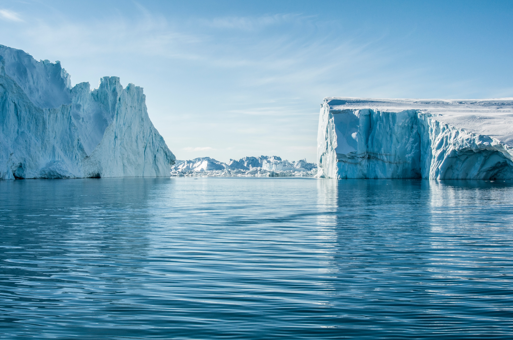

ARCHITECTURE
A new Greenlandic architecture has been emerging, shown in buildings which bear the hallmark of traditional Nordic design. Greenland’s bigger towns are providing examples of how a unique Greenlandic architecture is beginning to take shape. It’s no longer enough that a house is functional, innovative and striking, based on the Nordic tradition, yet still unique. Modern-day Greenlanders have – just like their ancestors – a special relationship with nature, and this is finding its way onto architects’ drawing boards.
GLOBAL WARMING AND GREENLAND
Climate change and global warming are hot topics of discussion all over the world. These discussions are particularly relevant in relation to Greenland as the ice sheet is often mentioned in connection with the debates on increases in global temperature. Frozen fresh water is bound in the form of millions of cubic metres of ice in Greenland, and overall the country contains 10 per cent of the world’s total reserves of fresh water.
FROM SNOWFLAKE TO ICEBERG
Icebergs are unique works of nature whose magnificence and majesty cannot be adequately captured on film – they must be experienced first hand! No two icebergs are alike, and when you see an iceberg for the first time, you may be seeing shapes and sizes that no-one has seen before. It also gives food for thought that icebergs were originally created in a slow transformation from snowflake to ice during a period predating modern history.
THE DANCING NORTHERN LIGHTS
The dancing northern lights in the night sky are a sight for the gods which winter holidaymakers in Greenland will in all likelihood come to experience. From early autumn the night sky is regularly illuminated by the northern lights’ green glow. It is a natural phenomenon that always causes excitement and wonder among those who have never seen it before.